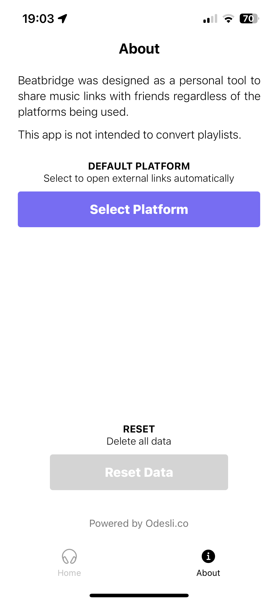
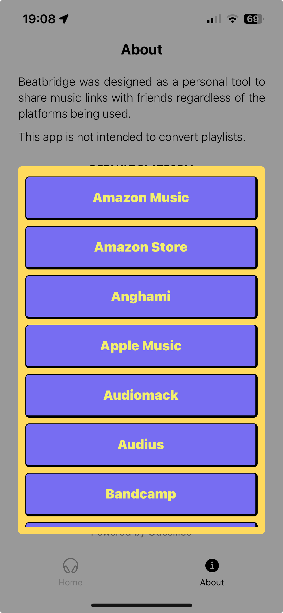

BeatBridge was originally designed from the perspective of trying to share a music link, so copying a new link to my clipboard made sense. However, as more people get their hands on it, it’s clear there are still some problems that BeatBridge needs to resolve.
BeatBridge needs better UX for user’s receiving music links
After user feedback, I learned that I needed to pay attention to users who receive links from others. In order to include them and make their lives easier with the app, I had to add a feature that would allow the user to open their preferred platform directly instead of copying a new link to their clipboard.
Feature Implementation Idea
My first reaction was to add a whole new app state, and allow the user to toggle between a recieving or sharing state but that made me cringe almost instantly. Even though it’s useful to have tools like useState, it’s easy to overuse them and cause bloat in your app.
Thankfully there are other options, and the quickest one to implement was using the onLongPress callback function available within the TouchableOpacity component, which enables triggering an action by long pressing on a button.
Reducing unnecessary complexity
In the case of useState, the app would need more UI components to simply display the new state, when ultimately the end result/action (opening the link to another app) is not that different from copying a link to the clipboard in the first place.
Using TouchableOpacity for the buttons that list the available platforms, long pressing on one would open the link on the user’s phone, and tapping would copy the link instead.
I have to see what tester’s think of this implementation, but I also want to add a setting within the app that lets users select their preferred streaming platform so they get redirected automatically after pasting a link from a differing platform.
State Management Revisited
I chose to use react-native-mmkv-storage and zustand for state management since both are lightweight and fast. When putting the project together, I didn’t realize that even though I set up mmkv correctly:
// mmkv.js
import { MMKV } from "react-native-mmkv";
const storage = new MMKV({
id: 'song-storage',
});
export default mmkvStorage = {
setItem: (name, value) => (storage.set(name, value)),
getItem: (name) => (storage.getString(name) ?? null),
removeItem: (name) => (storage.delete(name)),
};
// zustand-store.js
import mmkvStorage from './mmkv';
export default useStore = create(
persist(
(set) => ({
// key/val pairs
...initialState,
// actions
update: ({ newState }) => set(() => ({ newState })),
}),
{
name: 'song-storage',
storage: createJSONStorage(() => mmkvStorage),
}
)
);
The data types are different if accessing data directly from mmkvStorage compared to retrieving and updating state through useStore. It took me a moment to pinpoint the issue, which made me appreciate TypeScript a little bit…
Automating Links
Now that state management is resolved, I added a dropdown in the About tab of the app to allow users to select their preferred platform. There is also a new button to reset the data cache.


BeatBridge is slowly approaching a completed state! As a result, I am making the beta open invite! Here is a link to access the app: